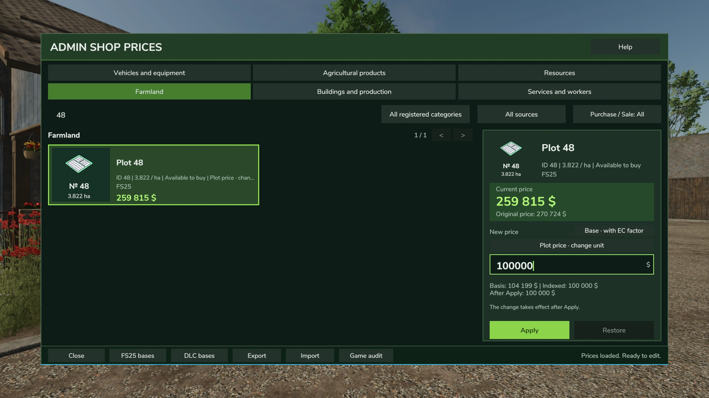

Vehicles & equipment
Set supported shop prices for vehicles and equipment.
Your rules. Your prices. Your Farming Simulator 25 economy. Manage supported prices directly in the game, from machinery to farmland and services.

Set supported shop prices for vehicles and equipment.
Adjust supported buying and selling prices independently.
Manage supported fuel, materials and refill prices.
Set supported land prices to fit your farm's economy.
Edit supported prices for production buildings, including existing map placements.
Control supported service and labor costs.
Manual prices can follow relevant economic indices when Economy Control is installed.
Keep a manually chosen price independent of Economy Control indices.




Official downloads are currently on KingMods. GitHub hosts documentation and feedback, not playable mod files. Remote-client and dedicated-server compatibility has not been verified in a real multiplayer session.
Donations are entirely optional and do not unlock content, features, updates or early access.